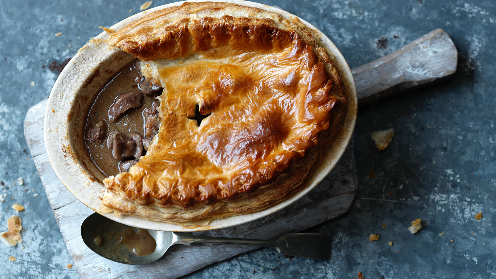

Steak and Kidney Pie

A SMALL AND YET FILLING DELICACY
Steak and kidney pie is a savoury pie that is filled principally with a mixture of diced
beef, diced kidney, fried onion, and brown gravy. Steak and kidney pie is a
representative dish of British cuisine
INGRIDIENTS
- Beef
- Onion
- Lamb kidney
- Flour
Method
- Place steak and kidney in large pan with onions, water and crumbled stock cube
- Bring to boil, reduce heat and simmer covered 1½ hours
- Combine flour with extra water, pepper and soy sauce.
- Add to steak and stir until mixture re-boils and thickens
- If making a pie top cool the meat mixture and pour into an ovenproof dish
- Make small cuts in pastry edge creating a scalloped effect
- Make two slits in top of pastry to allow steam to escape.
- Bake in a hot oven (220°C) 10 minutes
- SERVE AND ENJOY
Back to the top
Back to main pages